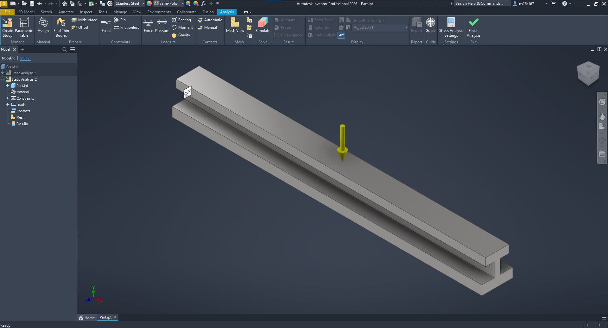
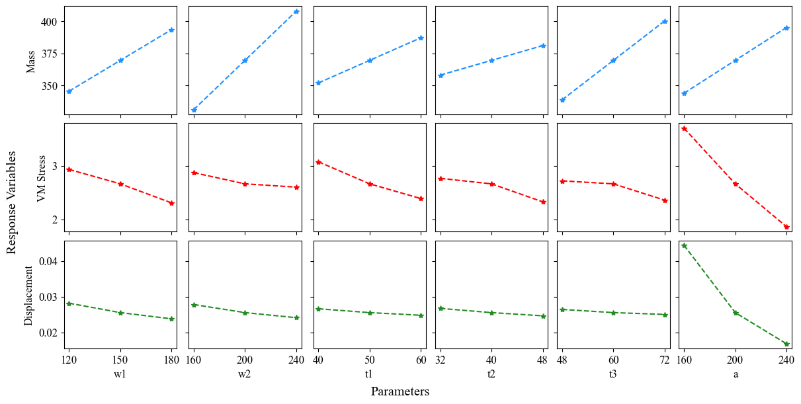
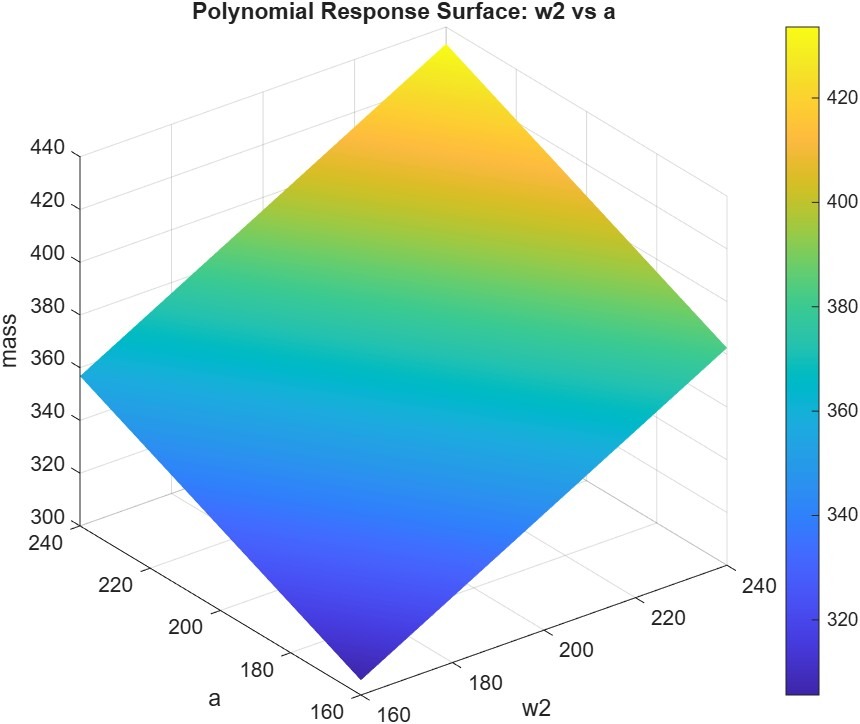
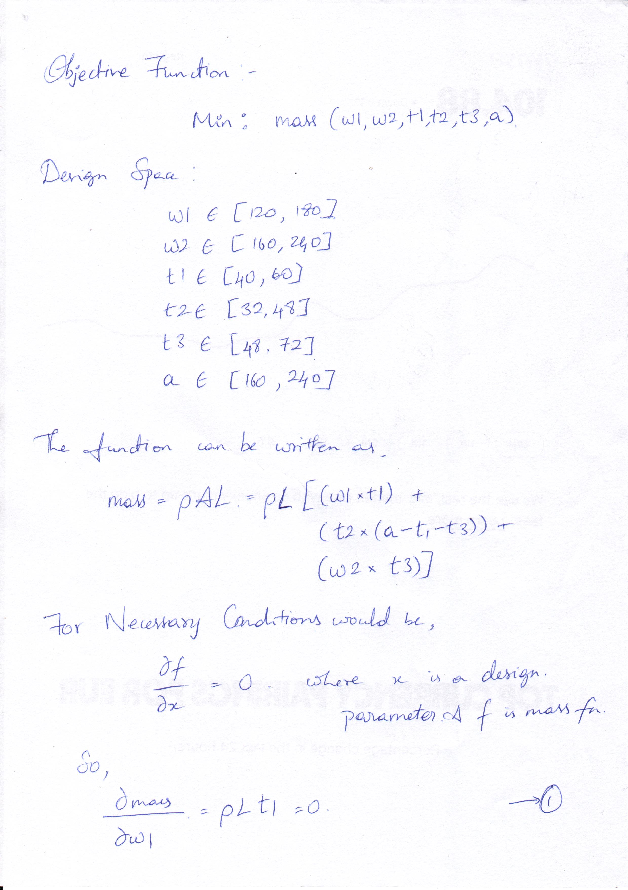
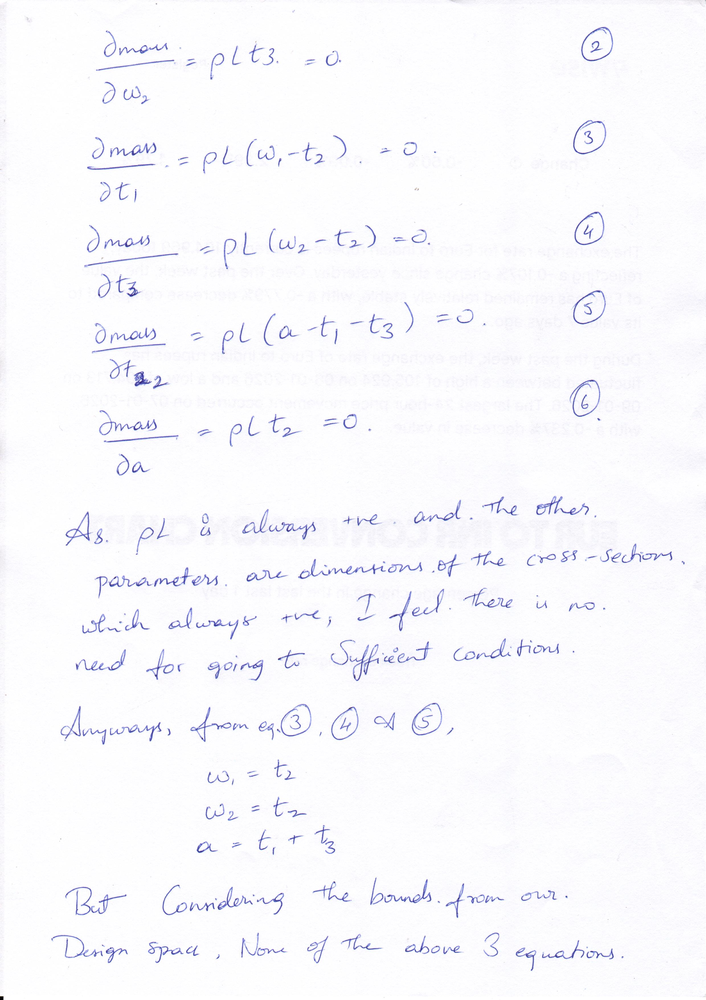
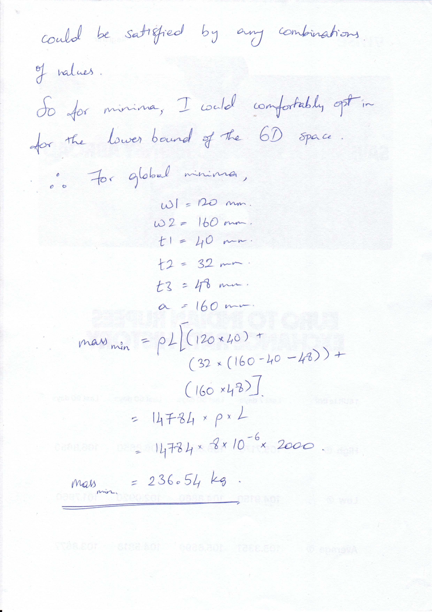

ED 6002: Optimization Methods in Engineering Design (2025-26)
Assignment 1 | Pranav D | ns26z167


\[ Minimize: Mass(p) \]
\[ p \in [0.8 p_0, 1.2 p_0]\\ p \in {w1,w2,t1,t2,t3,a}\\ p_0 := \text{nominal value of }p \]
\[ \delta(p) \le 2~\text{mm}, \quad \text{FOS}(p) \ge 1.5 \]
| Parameter | Value (mm) | Parameter | Value (mm) |
|---|---|---|---|
| w1 | 120 | t1 | 40 |
| w2 | 160 | t2 | 32 |
| a | 160 | t3 | 48 |
\[ \begin{align} \text{Mass} &= 236.54 \text{ kg}\\ \delta &= 0.058 \text{ mm} \\ \text{Max VM Stress} &= 5.1 \text{ MPa}\\ \end{align} \]

data = readtable('master.csv');
X = data{:, {'w1','w2','t1','t2','t3','a'}};
y = data.mass;
tbl = data(:, {'w1','w2','t1','t2','t3','a','mass'});
model = fitlm(tbl, 'quadratic');
disp(model)
model.Rsquared
[w2Grid, aGrid] = meshgrid( ...
linspace(min(data.w2), max(data.w2), 50), ...
linspace(min(data.a), max(data.a), 50));
w1 = mean(data.w1);
t1 = mean(data.t1);
t2 = mean(data.t2);
t3 = mean(data.t3);
gridTable = table( ...
repmat(w1, numel(w2Grid), 1), ...
w2Grid(:), ...
repmat(t1, numel(w2Grid), 1), ...
repmat(t2, numel(w2Grid), 1), ...
repmat(t3, numel(w2Grid), 1), ...
aGrid(:), ...
'VariableNames', {'w1','w2','t1','t2','t3','a'});
massPred = predict(model, gridTable);
massSurface = reshape(massPred, size(w2Grid));
surf(w2Grid, aGrid, massSurface)
xlabel('w2')
ylabel('a')
zlabel('mass')
title('Polynomial Response Surface: w2 vs a')
colorbar
shading interpdata = readtable('master.csv');
predictorNames = {'w1', 'w2', 't1', 't2', 't3', 'a'};
responseName = 'mass';
tbl = data(:, [predictorNames, {responseName}]);
model = fitlm(tbl, 'quadratic');
fprintf('\n================ MODEL SUMMARY ================\n');
disp(model);
fprintf('R-squared: %.4f\n', model.Rsquared.Ordinary);
objFun = @(x) predict(model, array2table(x, 'VariableNames', predictorNames));
lb = [min(data.w1), min(data.w2), min(data.t1), ...
min(data.t2), min(data.t3), min(data.a)];
ub = [max(data.w1), max(data.w2), max(data.t1), ...
max(data.t2), max(data.t3), max(data.a)];
x0 = (lb + ub) / 2;
limit = (mean(data.t1) + mean(data.t2)) * 1.5;
nonlcon = @(x) deal(x(3) + x(4) - limit, []);
options = optimoptions('fmincon', ...
'Algorithm', 'sqp', ...
'Display', 'iter', ...
'MaxFunctionEvaluations', 5000, ...
'ConstraintTolerance', 1e-9, ...
'OptimalityTolerance', 1e-9, ...
'StepTolerance', 1e-10);
[x_opt, fval_opt] = fmincon(objFun, x0, ...
[], [], ...
[], [], ...
lb, ub, ...
nonlcon, ...
options);
problem = createOptimProblem('fmincon', ...
'objective', objFun, ...
'x0', x0, ...
'lb', lb, 'ub', ub, ...
'nonlcon', nonlcon, ...
'options', options);
ms = MultiStart('Display', 'off');
[x_global, fval_global] = run(ms, problem, 1);
fprintf('\n================ LOCAL OPTIMUM (fmincon) ================\n');
disp(array2table(x_opt, 'VariableNames', predictorNames));
fprintf('Minimum mass (local) = %.4f\n', fval_opt);
fprintf('\n================ GLOBAL OPTIMUM (MultiStart) ================\n');
disp(array2table(x_global, 'VariableNames', predictorNames));
fprintf('Minimum mass (global) = %.4f\n', fval_global);================ LOCAL OPTIMUM (fmincon) ================
w1 w2 t1 t2 t3 a
___ ___ __ __ __ ___
120 160 40 32 48 160
Minimum mass (local) = 236.5440
================ GLOBAL OPTIMUM (MultiStart) ================
w1 w2 t1 t2 t3 a
___ ___ __ __ __ ___
120 160 40 32 48 160
Minimum mass (global) = 236.5440


Comments